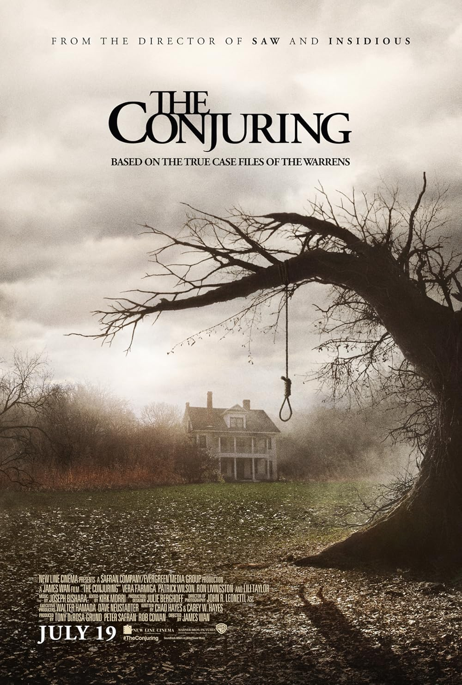
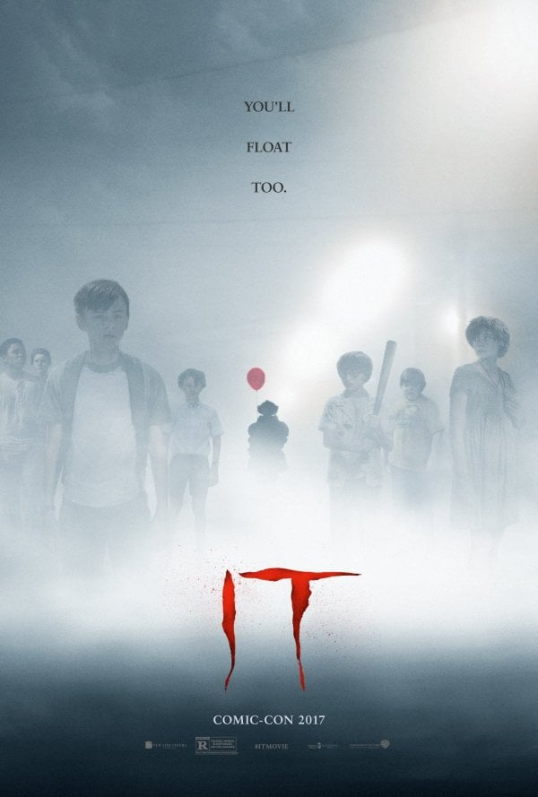

Hans Isaac M. Baquiran
My Top 3 Favorite Movies/Series
- The Conjuring :

- I like the movie because it's thriller and an action pack genre
-
- IT Trilogy :

- A fun, scary clown movie which I find interesting
-
- World War Z :
- I pick this movie because of it's fictional story and which I find it intriguing
-